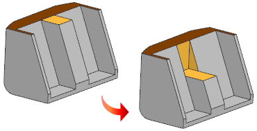
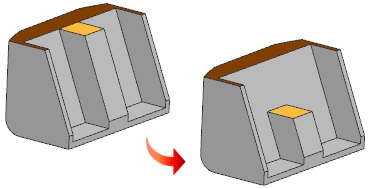

Move Face — Step Face enhancement
What is it?
When you use the Move Face command, you now have more control over the extension of neighboring faces. A new Step Face list is added to the Settings group. If you select the Extend Neighbors at Smooth Edge option, you can extend and combine neighboring coplanar faces.
In this example the top face has been split into two faces.
|
 |
Overflow Behavior = Extend Cap Face Step Face = None |
|
 |
Overflow Behavior = Extend Cap Face Step Face = Extend Neighbors at Smooth Edge |
Where do I find it?
|
Application |
Modeling, Shape Studio. Advanced Simulation, Manufacturing |
|
Prerequisite |
In the Move Behavior list, you must select Move and Adapt |
|
Toolbar |
Synchronous Modeling→Move Face |
|
Menu |
Insert→Synchronous Modeling→Move Face |
|
Location in dialog box |
Settings group→Face Change Step list |